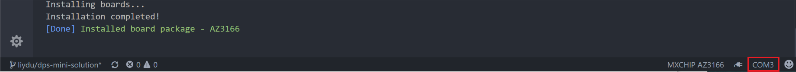
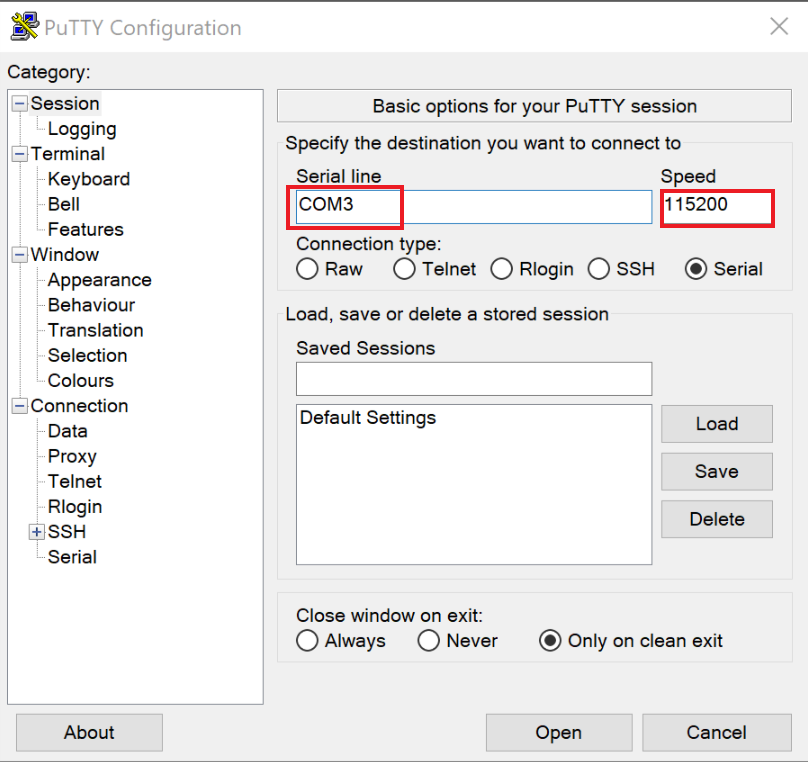
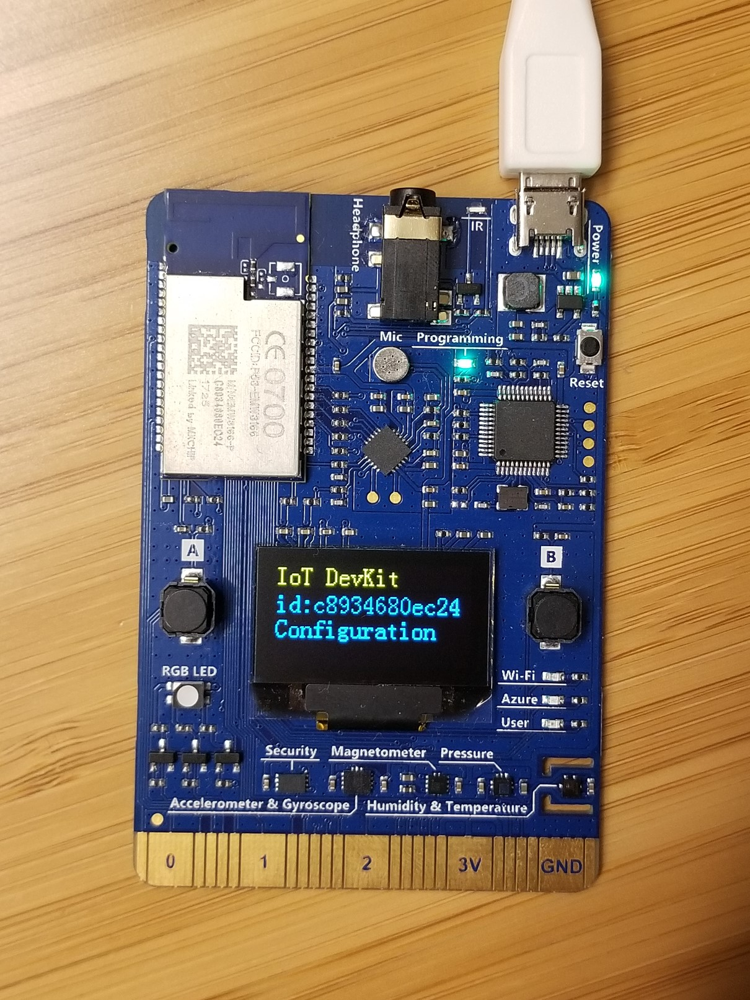
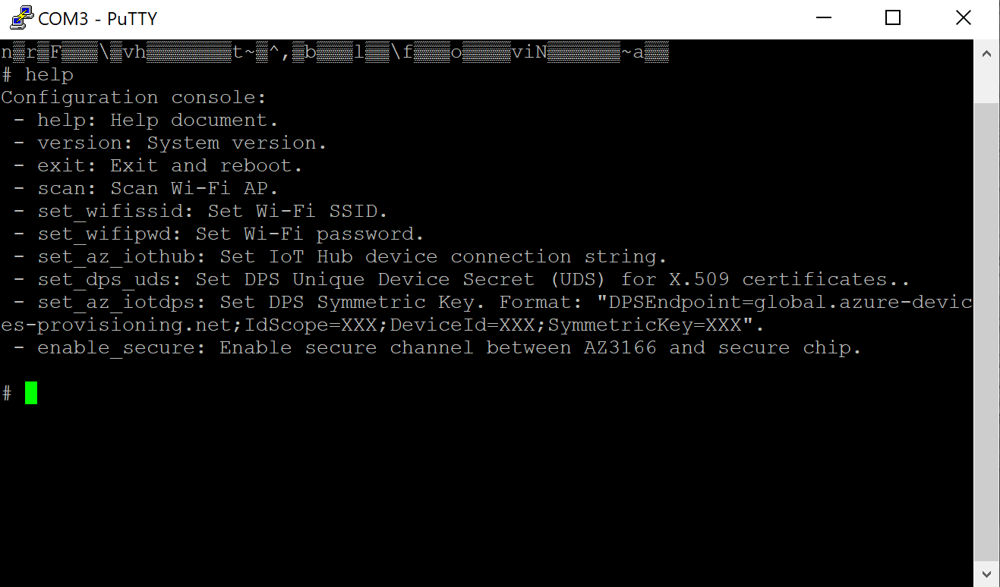
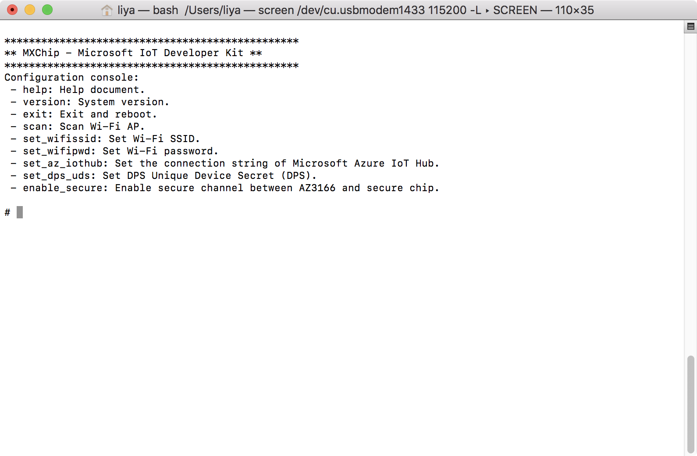

Use configuration mode
IoT DevKit has the configuration model that you can configure settings like WiFi, IoT Hub connection string and security feature for it.
Before you begin
- Connect IoT DevKit to the computer.
- Download SSH and Telnet client like Putty for Windows.
Windows
Enter Configuration Mode
-
Open VS Code and identify the COM port on the status bar.

-
Download and open Putty, type the right COM port and 115200 for Speed.

-
Click Open. A serial monitor window will open.
-
On the device, hold down button A, then push and release the reset button. Observe the screen displays your device MAC address and ‘Configuration’.

-
Serial monitor window displays command list available.

macOS
Enter Configuration Mode
-
Launch Spotlight by pressing Cmd + Space.
-
Type
terminaland select Terminal app. - List IoT DevKit device.
ls /dev/cu.usbmodem* -
In the list of connected devices, the device name is like /dev/cu.usbmodem1433
- Connect to the IoT DevKit using the Terminal screen utility.
screen /dev/cu.usbmodemXXXX 115200 –L -
On the device, hold down button A, then push and release the reset button. Observe the screen displays your device MAC address and ‘Configuration’.
- Serial monitor window displays command list available.

Note: Make sure you exit screen utility and terminate it by using the Ctrl + A followed by the Ctrl + \. Otherwise, you may not able to enter the screen utility again.
Commands
Commands for the IoT DevKit Configuration Mode.
help
help
Display the commands list
version
version
Display DevKit SDK, Mico, mbed-os, mbed TLS lib and WiFi lib version details.
exit
exit
Exit Configuration Mode and reboot into normal mode.
scan
scan
Scan and list all available WiFi SSID.
set_wifissid
set_wifissid [SSID]
Connect specific WiFi SSID.
set_wifipwd
set_wifipwd [password]
Set password for WiFi SSID you connected with command set_wifissid.
set_az_iothub
set_az_iothub [device connection string]
Set device connection string for Azur IoT Hub. View Understand Different Connection Strings in Azure IoT Hub to learn more.
set_dps_uds
set_dps_uds [unique device secret]
Set Unique Device Secret that is used as device unique key to be used for calcuation by Device Identifier Composition Engine (DICE) and be used to register on IoT Hub Device Provisioning Service.
set_az_iotdps
set_az_iotdps [DPS Symmetric Key]
Set Symmetric Key based on the shared access signature (SAS) token that is supported by DPS. The Symmetric Key format is "DPSEndpoint=global.azure-devices-provisioning.net;IdScope=XXX;DeviceId=XXX;SymmetricKey=XXX".
enable_secure
enable_secure
Enable secure channel on STSAFE secure chip.
Here are what will happen when enabling the security feature:
- A symmetric key initiated by the chip will be set and stored on the secure chip.
- All existing data stored in EEPROM (e.g. WiFi password) will be automatically encrypted.
- Once enabled, all data reading and writing on the device will be encrypted from that moment.
See Understand security chip for more details.
Problems and feedback
If you encounter problems, you can find FAQs if you encounter problems or reach out to us from our Gitter channel.